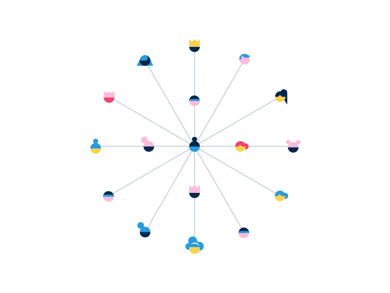
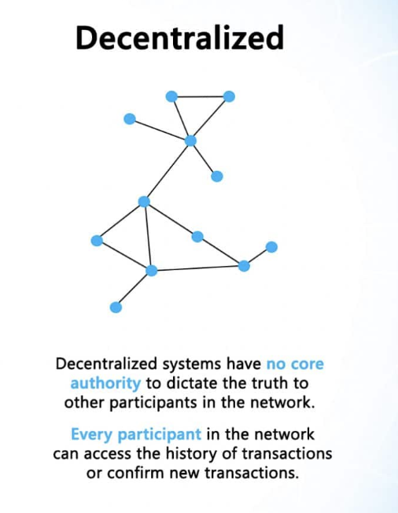

What is a Distributed System ? Advantages and Disadvantages

Types
- Centralized
- Decentralized Systems
- distributed systems
Centralized

What is Centralised Distribution?
Centralised distribution is a means of organising the receipt of product from suppliers and its onward delivery to the individual branches of a multiple retailing operation. Deliveries from suppliers are transported to a central location, usually in full load quantities, rather than to each branch. Loads are then consolidated from a number of suppliers and delivered to the branches, usually in a single full load
Pros
Simple deployment can be done Its Can be developed quickly Affordable to maintain Practical when data needs to be controlled centrally
Cons
Prone to failures(error prone) Higher security and privacy risks for users Longer access times to data for users who are far from the server
Decentralized Systems

These are another type of systems which have been gaining a lot of popularity, primarily because of the massive hype of Bitcoin. Now many organisations are trying to find the application of such systems. In decentralized systems, every node makes its own decision. The final behavior of the system is the aggregate of the decisions of the individual nodes. Note that there is no single entity that receives and responds to the request.
ref
The master-slave architecture
As distributed systems we have become more commonplace, the need for higher capacity distributed databases has largely grown. Many distributed databases still attempt to maintain ACID guarantees (or in some cases only the consistency aspect, which is the most difficult in a distributed environment), leading to the master-slave architecture.
- Concurrency (Advantage)
- Lack oF Global Clock (Disadvantage)
- Independent Device failure (Advantage)
Concurrency vs. Parallelism
Concurrency means multiple tasks which start (can do multiple thing same time), run, and complete in overlapping time periods, in no specific order. Parallelism is when multiple tasks OR several part of a unique task literally run at the same time, e.g. on a multi-core processor. Remember that Concurrency and parallelism are NOT the same thing.
Concurrency is about dealing with lots of things at once. Parallelism is about doing lots of things at once.
Types of Distributed Computing
- Computing Focus : minimum latency
Cluster computing Grid computing
- Information Focus
Transaction process system Enterprise Application Integration
- Pervasive Focus (Connect with sorrowndings)
one of main major problem is whether we want to go for a centralized system, a decentralized one or a distributed one?
lets checkout those
- Points of Failure / Maintenance :
Centralized systems are vey easy to maintain as there is only a single point of failure. Decentralized have more but still finite. Distributed systems difficult to maintain.
- Fault Tolerance / Stability :
Centralized can be highly unstable. Kill the leader and there will be complete disorder. Kill the leader for a decentralized system and you will have many decentralized systems. Distributed systems are very stable and a single failure doesn’t do much harm.
-
Scalability / Max Population :
Centralized — low scalability minimal scalable , Decentralized — Moderate, Distributed — Infinite.
-
Ease of development / Creation :
Centralized systems can be created really fast, you pick up a framework and apply it everywhere. For Decentralized and Distributed, you have to first work out the lower level details like resource sharing (trade) and communications (transport).
-
Evolution / Diversity :
Since centralized systems follow a single framework, they don’t have diversity and evolve slowly. But for Decentralized and Distributed systems, once the basic infrastructure is in place, evolution is tremendous.